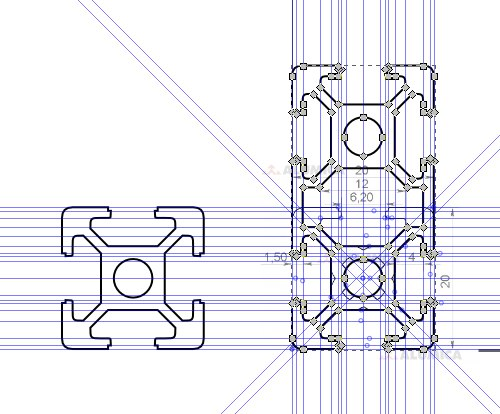
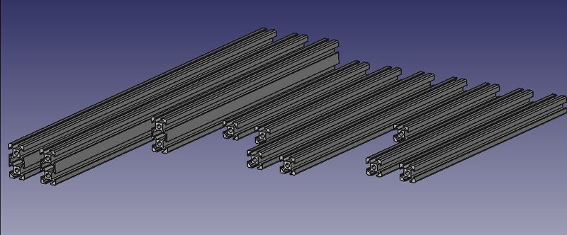
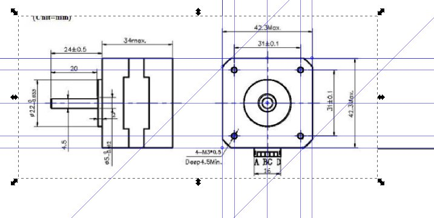
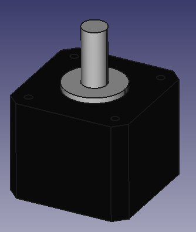
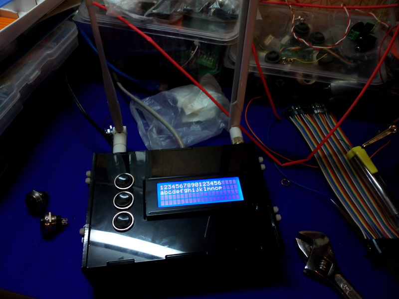
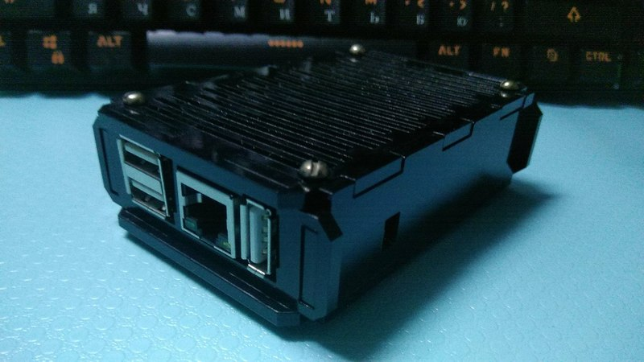
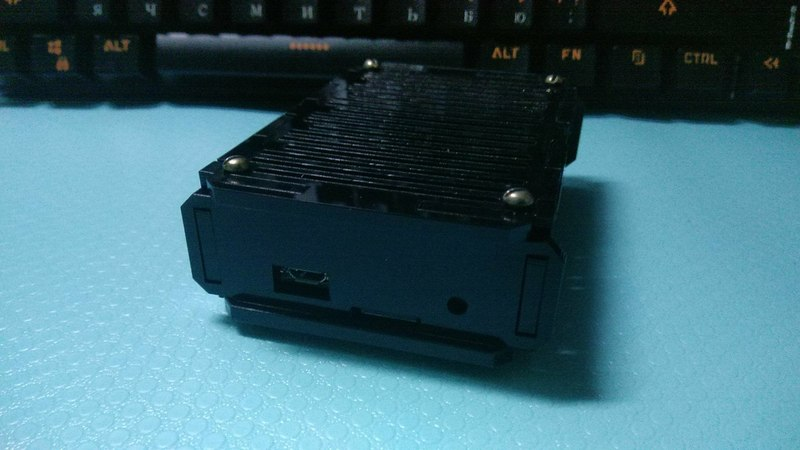
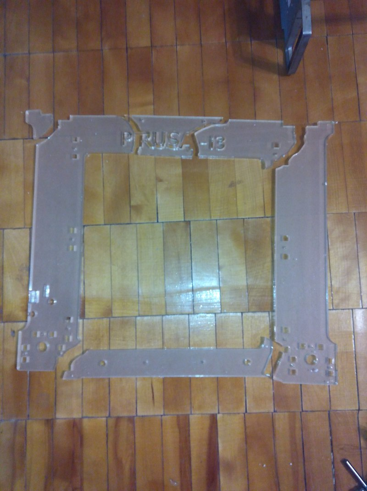
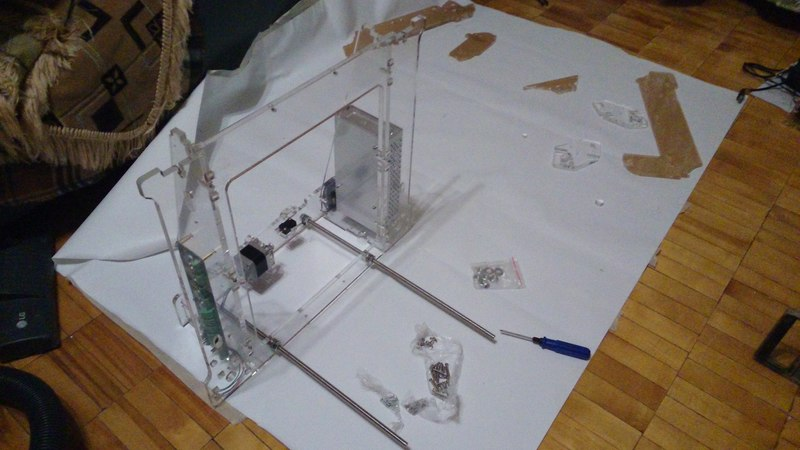

Про векторную графику и консерватизм

Давным-давно, в 97-м или 98-м году я окончил курсы по Corel Draw, тогда ещё седьмой версии. Я тогда не думал о том, где и зачем мне это может понадобиться, мне тогда просто нравилась сама концепция векторной графики. Что удивительно, знания эти мне пригодились и не раз.
Логотипы
Первый раз навыки пригодились, когда я работал в Xsolla. Я предложил хранить логотипы в векторе (svg) и в случае необходимости генерировать растровые логотипы нужных размеров на нужном фоне с нужной рамкой для каждой из платёжных систем (коих было несколько сотен) с помощью shell скрипта с ImageMagick внутри. В противном случае приходилось рисовать/искать каждый логотип заново, если нужно было бОльшее разрешение, чем уже было в наличии или мучительно вырезать его из отбрасываемой тени или сталкиваться с рядом других подобных трудностей каждый раз, когда добавляли новый дизайн сайта. Напомню, что логотипов было несколько сотен (около восьмисот). Для того, чтобы получить векторный логотип из растра, конечно, можно сделать трейс, но во-первых, это негативно влияет на качество получаемого изображения (а качество было важным фактором), а во-вторых, при сложной геометрии и наличии градиентов, трейсер разбивает изображение на десятки тысяч треугольников, после чего с ним становится крайне некомфортно работать - тормозит и графический редактор и скрипт, которому нужно обработать восемь с хвостом сотен подобных изображений для полутора десятков размеров. Поэтому логотипы переводились в вектор вручную и занимали в среднем от двух до семи килобайт.
Когда мы просили логотипы в векторном формате у менеджеров самих платёжных систем, чего нам только не присылали. И jpg переименованный в svg ("Вы же сами сказали, что вам в svg нужно!"). И вариант с открытием векторного редактора с последующим импортом туда ссылки на растровый файл. И попытки нарисовать логотип в Microsoft Word. И файл весом в 300мб, полученный путём трассировки с каким-то запредельным количеством объектов... Одним словом, в большинстве случаев приходилось делать всё самим.
Помню, мне сказали, что перевод логотипов в вектор занимает очень много времени. На вопрос "сколько?" мне ответили, что за день получается два-три, максимум четыре логотипа. Я тогда попросил девочку дизайнера показать, как она их рисует. Далее было феерично. Девочка открывает ai файл (Adobe Illustrator) весом около гигабайта. Естественно, CPU под 100%, мак пытается взлететь на кулерах, ждём минут 7-10 открытия файла. Я был просто в шоке. В файле несколько сотен слоёв, на каждом из которых свой логотип! Я бы просто никогда в жизни до такого не догадался! А так как векторное изображение создаётся поверх растрового, то и растровые изображения также лежат в том же файле. Самое прекрасное, что при закрытии Adobe Illustrator ещё и перезаписывает файл при сохранении. Гениально, блин!
- Почему все логотипы в одном файле?
- Ну, чтобы всё в одном месте лежало!
- А почему именно Adobe Illustrator? Он ведь отдельных денег стоит.
- А чем ещё то?
Фейспалм подкрался незаметно. Почему я, системный администратор, должен учить дизайнера рисовать в векторе и почему я знаю возможные альтернативы для её рабочих инструментов, а для неё их существование оказывается неожиданным сюрпризом?
В общем, поставил девочке Inkscape, научил им пользоваться и для ускорения процесса сам сделал несколько сотен логотипов. В среднем получалось около 10 штук за час-полтора.
Использование для создания 3D объектов
Ещё одно неожиданное применение для Inkscape - это генерация двумерных чертежей, которые затем используются для создания трёхмерных фигур. Об этом я тоже напишу потом отдельный пост.




Вообще, я очень полюбил Inkscape - это продукт уровня, которого совершенно не ожидаешь от OpenSource решения. Может быть в каких-то аспектах он не дотягивает до Corel Draw или Adobe Illustrator (например, я не знаю, как в нём сделать выравнивание текста по кривой), но в 99% всех возможных случаев вам хватит его возможностей, к тому же он бесплатен, есть под все распространённые платформы и обладает некоторыми киллерфичами (например, возможностью генерировать g-code для станков с ЧПУ).
Создание корпусов для устройств
Рано или поздно все, кто прямо или косвенно связан с электронными устройствами, одноплатными компьютерами и подобными вещами, сталкиваются с необходимостью помещения какого-нибудь устройства в корпус. Возникает вопрос - где этот корпус взять?
Самый очевидный ответ на этот вопрос - купить. Но иногда такое решение в силу тех или иных причин является невозможным или нерентабельным. Например, корпус вам нужен в ближайшее время, а на территории нашей страны он не продаётся. Либо цена этого корпуса выходит за рамки разумного. Остаётся два варианта решения - либо использовать в качестве корпуса что-нибудь другое (например, отрезок кабель-канала, пластиковую коробку подходящих размеров и т.п.), либо создать корпус самому с помощью лазерной резки или 3d печати. И то и другое сейчас вполне доступно как услуга. Лазерную резку акрила имеет смысл искать в рекламных конторах, услуги 3d печати широко представлены на avito.
И вот, несколько лет тому назад мне необходимо было сделать корпуса для одноплатного компьютера Banana Pi R1 и пары Orange Pi PC. По сравнению с корпусами для более распространённого и раскрученного Raspberry Pi, ценники на эти корпуса были в среднем в 3-5 раз выше несмотря на схожую конструкцию и сравнимое количество материала. Так как 3d печать в то время была дорога, я решил заказать лазерную резку корпусов из акрила.



Вооружившись пространственным воображением, штангенциркулем и inkscape, я нарисовал детали корпуса и думал, что дело почти в шляпе, но оказалось, что это было самой простой частью квеста.
Я потратил несколько дней и кучу времени на то, чтобы найти рекламную компанию, которая бы приняла файл в формате, отличном от cdr (Corel Draw). Казалось бы - в чём проблема? Достаточно сделать импорт файла из другого формата и проблема решена. Но нет, рекламщики более чем в десятке контор стояли на своём - им нужен файл исключительно в формате Corel Draw, причём версии не ниже, чем 12!
То есть, для того, чтобы сделать три корпуса общей стоимостью около тысячи рублей, с моей стороны необходимо было купить Windows (если Corel нужной версии не взлетит под Wine), выделить машину, на которую Windows можно поставить, купить Corel Draw (это ещё около шести тысяч рублей) и это всё для того, чтобы открыть Corel, сделать импорт из svg/pdf/wmf/ещё чего-то, пересохранить файл и отправить им.
На мои замечания о том, что мне нет резона приобретать Corel Draw для этих целей, люди смотрели на меня как на умалишённого, только что не крутили пальцем у виска и искренне недоумевали, как я вообще живу, если у меня нет Windows и почему я вдруг решил купить Corel Draw, когда есть крякнутые версии на всех торрентах?
Неужели никто не проводит параллелей и не понимает, что если продолжать следовать той же логике, то вместо вызова такси, когда им нужно будет куда-то добраться, они вполне могут угнать ближайшую машину?
Почему вообще столько лет в нашей стране считалось, что если что-то можно легко скопировать, то это что-то ничего не стОит? Обучиться на менеджера, подозреваю, тоже достаточно несложно. Думаю, это намного легче, чем стать программистом. Значит ли это, что менеджеры в принципе должны работать бесплатно? Почему тогда труд тех, кто написал тот же Corel Draw или Windows не должен быть вознаграждён?
В результате после десятка контор, где все были слишком ленивы, чтобы в меню File добраться до пункта Import, я всё-таки нашёл контору с адекватным человеком. Отправил ему мой проект в куче различных форматов, импорт одного из которых (как ни странно, PDF) оказался вполне успешен. В результате я получил свои корпуса и вот уже на протяжении четырех лет периодически тревожу всё того же менеджера всё в той же компании, когда мне нужен очередной корпус.
Восстановление рамы 3D принтера
И ещё в одной ситуации меня спас Inkscape. Когда-то я заказал себе 3d принтер из Китая. Точнее - набор для сборки принтера. Все детали посылки были расположены в пенопластовых ложементах. В процессе транспортировки один шаговый двигатель сорвался со своего места, раскрошил всё внутри коробки, сломал основную часть рамы. Но моё счастье было бы неполным, если бы не оказалось, что один из валов пробил бок коробки и был утерян. Бонусом мне не положили ещё одно крепление ремня по оси X.


Я долго бодался с продавцом, смог вернуть только половину того, что потратил на восстановление части акриловой рамы. Но спроектировал я раму всё в том же Inkscape и сейчас принтер работает.
Прочие варианты применения
Когда я рисовал тему для IceWM, выяснилось, что в векторе это намного удобнее, приятнее и быстрее делать, чем в растровом редакторе. Вот что получилось.
{kind=link}
Кстати, это был 2009-й год.
Так же знаю как минимум одного человека, который дизайн сайтов рисует с помощью inkscape.
А ещё векторный редактор пригождается порою там, где ты от него этого не ожидаешь. Например, когда нужно визуально сравнить площадь двух фигур, как в этом посте. Или когда планируешь, как расставить мебель в комнатах после ремонта, или пытаешься расположить керамическую плитку с узорами и без узоров по стенам ванной. Даже для разводки электросети или сети локальной Inkscape тоже может пригодиться, хотя в последних двух случаях можно применить более подходящие инструменты.
Пожалуй, Inkscape - это один из тех инструментов, который я действительно люблю использовать и время, потраченное на его освоение, окупилось уже стократно. К тому же, когда я учился векторной графике, интернет был редкостью даже по карточкам, поэтому у меня других доступных источников получения нужной информации не было. Сейчас же в сети в открытом доступе существует такое огромное множество уроков по работе с чем угодно, что развиваться можно в любом направлении семимильными шагами, было бы на то желание. Кстати, изучение векторной графики очень помогает, когда переходишь на проектирование трёхмерных деталей - практически всё то же самое, но в трёх размерностях вместо двух.
Теги: instruments, graphics